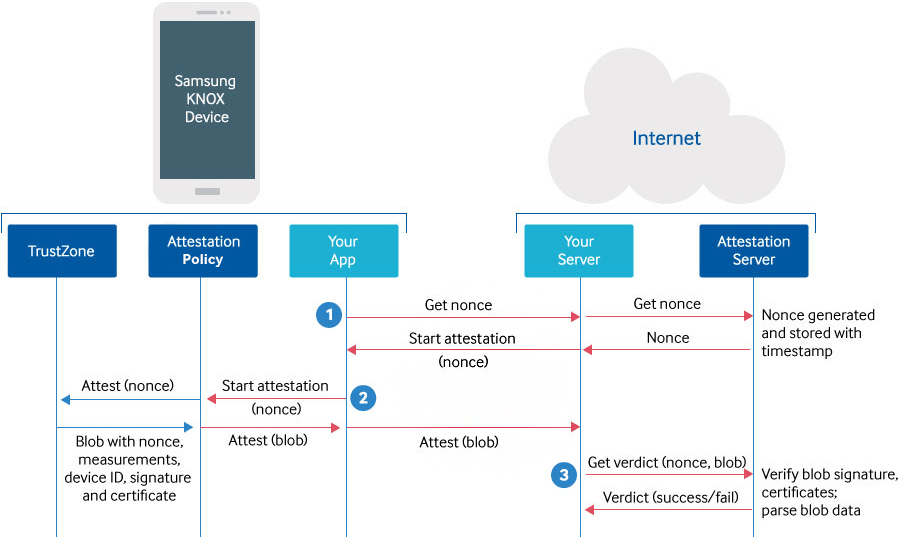
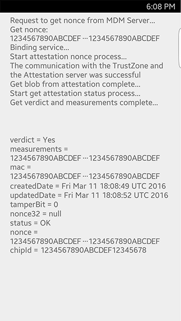

Tutorial — Knox Attestation (v2)
Warning
Knox 3.4 introduced the latest version of Attestation (v3) running on flagship devices from the Note 10 onwards. Enhanced Attestation uses the EnhancedAttestationPolicy class and v3 REST API. For information about this latest version of Attestation, see Attestation (v3).
Samsung Knox Attestation lets you verify that a Samsung Android device has not been rooted or running unofficial firmware that can compromise the data integrity.
This v2 version of Attestation is used on devices running the Knox v3.3 or earlier. The v2 version uses the earlier AttestationPolicy class and v2 REST API. For information about the latest version of Attestation, see Attestation (v3). We recommend that you migrate any v2 deployments to v3 to take advantage of the latest security features.
About Attestation
TIMA
Attestation uses TIMA (TrustZone-based Integrity Measurement Architecture), a patented technology that is exclusively licensed by Samsung. TIMA checks the following:
- Linux kernel
- Loadable kernel modules
- Selected kernel data structures
- Key SE for Android data structures, in kernel memory
TIMA derives measurements from these components and stores them in a tamper-resistant part of TrustZone hardware. Measurements are initially made from a device’s original factory kernel. While a device is being used, TIMA does:
- Periodic monitoring of kernel text and RO data sections
- Controlled loading of unauthorized kernel modules
TIMA can check if legitimate kernel code and unverified code are running at the kernel level, to prevent malicious attacks from corrupting the device.
Attestation
Knox Attestation has the ability to check device integrity on-demand, from a remote web server. When requested, a Knox Attestation agent on the device:
- Reads the previously stored measurement information
- Checks the Knox Warranty Bit value, which indicates if a device has been rooted
- Combines the data in a proprietary way to produce an attestation verdict, which indicates if tampering is suspected
This verdict is sent to the requesting web server. It includes a cryptographic signature that is based on the device’s unique attestation certificate and embedded in the device during the manufacturing process. This process ensures that the attestation verdict cannot be altered during transfer.
Any further action is determined by the enterprise. If device tampering is suspected, an enterprise can choose to uninstall apps from the device, erase sensitive data, check the location of the device, or simply log the event for later action.
How Attestation works
To perform attestation for a device, you must create both:
- An Android app to initiate the attestation check on a device
- A web script to communicate with Samsung’s Attestation server

Here is the end-to-end process:
- Get a nonce — A nonce is a random value that uniquely identifies each attestation request. Each nonce is valid for a short time period, after which the Attestation Server fails any request made using that nonce. This is to avoid a replay attack that could allow an attacker to reuse a past attestation result.
- Start attestation — You set up a service connection with the Knox Attestation Agent, to begin the attestation and handle the resulting blob (Binary Large OBject) through an intent.
- Get the attestation verdict — Finally, you send the blob to the Attestation Server, which indicates if a device passed or failed its integrity checks.
Attestation examples
Set up server
In the following examples, we use an Apache server on a Linux operating system with PHP as the scripting language. You can set up such a web server from scratch quite simply. If you don’t have a web server, you can enroll in a free or trial cloud service to get quick access to one.
If you are new to web server setup, here are some basic Linux commands to set up the server:
install Ubuntu 14.0sudo apt-get updatesudo apt-get install apache2sudo apt-get install php5 libapache2-mod-php5 php5-mcrypt php5-curlsudo /etc/init.d/apache2 restart
Alternatively, you can use a pre-built environment, such as that provided by Apache Friends.
Once you have a web server with PHP support, copy your scripts into the folder /var/www/html. In the sample Attestation app, there are two PHP scripts, called nonces.php and measurements.php, which you can copy into this folder.
Secure communication
For secure communication with the Attestation server, use an HTTPS connection and a SSL certificate to encrypt data sent over the connection. Make sure to purchase an SSL certificate from a trusted provider. Self-signed certificates are not trusted by the Attestation server. Also, make sure your certificate contains the complete certificate chain. For help, please consult with your web provider.
Vendor-Unique Attestation Key
In the header of every REST API call to the Attestation server, identify yourself by encoding your own unique Vendor-Unique Attestation Key, which you can get from the Knox Developer Portal.
Start attestation
Define an attestation intent in the manifest
When the AttestationPolicy has a blob containing the attestation measurements, com.samsung.android.knox.intent.action.KNOX_ATTESTATION_RESULT. To handle this intent your app must have permission that com.samsung.android.knox.permission.KNOX_REMOTE_ATTESTATION.
Identify the class that handles this intent. In our sample app com.samsung.business.sdk.attestation, we use the class AttestationReceiver. Declare the class in the Android manifest file as follows:
<receiver android:name="com.samsung.business.sdk.attestation.AttestationReceiver" android:enabled="true">
<intent-filter>
<action android:name="com.samsung.android.knox.intent.action.KNOX_ATTESTATION_RESULT"/>
</intent-filter>
</receiver>
Start attestation using AttestationPolicy.
Your app communicates with the Knox Attestation agent using the AIDL, as declared through the file IAttestation.aidl.
// import AttestationPolicy
import com.samsung.android.knox.integrity.AttestationPolicy;:
// declare AttestationPolicy to call api
private AttestationPolicy mPolicy;
mPolicy = new AttestationPolicy(Context);
// extract the nonce from the response.
String svrAddr = "http://attestation.example.com/nonces";
HttpPost httppost = null;
httppost = new HttpPost(addr);
httppost.addHeader("x-knox-attest-api-key", apiKey);
HttpResponse response = httpClient.execute(httppost);
InputStream inputStream = response.getEntity().getContent();
BufferedReader bufferedReader = new BufferedReader(new InputStreamReader(inputStream));
String readLine = bufferedReader.readLine();
StringBuffer stringBuffer = new StringBuffer("");
while (readLine != null) {
stringBuffer.append(readLine);
stringBuffer.append("\n");
readLine = bufferedReader.readLine();
}
String output = stringBuffer.toString();
String mNonce = output.substring(10, output.length() - 3);
// call startAttestation
mPolicy.startAttestation(mNonce);
Handle the attestation intent
Your app handles the intent com.samsung.android.knox.intent.action.KNOX_ATTESTATION_RESULT by passing it to AttestationReceiver.onReceive(). This method is where you handle the blob sent by the AttestationPolicy.
// import package that defines constants for values returned by AttestationPolicy
import com.samsung.android.knox.integrity.AttestationPolicy;
public class AttestationReceiver extends BroadcastReceiver {
private static final String TAG = "Attestation";
static AttestationFragment attestationFragment;
// Get the current fragment instance
public AttestationReceiver(AttestationFragment attestationFragment) {
AttestationReceiver.attestationFragment = attestationFragment;
}
@Override
public void onReceive(Context context, Intent intent) {
// Get the result of the intent
final int result = intent.getIntExtra(Attestation.EXTRA_RESULT, Integer.MIN_VALUE);
switch (result) {
// check if communication with the Knox Attestation Agent was successful
case Attestation.RESULT_ATTESTATION_SUCCESSFUL:
// Get the blob from the intent
byte[] blob = intent.getByteArrayExtra(Attestation.EXTRA_ATTESTATION_DATA);
// Get the status from within the blob
attestationFragment.getAttestationStatus(blob);
break;
Get Nonce
Get a nonce from your web script
In your Android app, request a nonce from your web server. On the web server, you need a script to take the request and forward it to Samsung’s Attestation server. In the sample Attestation app, there is a script called nonces.php that does this.
// identify the URL of your web server
private static final String URL_MDM_SERVER_NONCE = "http://attestation.example.com/nonces";
// through HTTP, send a nonce request to your web server
String response = HttpClient.getInstance().getNonce(URL_MDM_SERVER_NONCE, mEditApiKey.getText().toString());
In this example, we use a string variable called response to store the resulting nonce. Later, you will parse the response into a JSON object and pass it to the Attestation agent on the device.
Get a nonce from the Attestation server
In your web script, build the request to get a nonce from the Attestation Server. Our sample app does this using PHP, which you can find in the file nonces.php:
$curl = curl_init();
curl_setopt($curl, CURLOPT_URL,"https://attest-api.secb2b.com/v2/nonces");
curl_setopt($curl, CURLOPT_POST, 1);
curl_setopt($curl, CURLOPT_SSL_VERIFYPEER, false);
curl_setopt($curl, CURLOPT_RETURNTRANSFER, false);
$headers = array(
'x-Knox-attest-api-key: '.$api_key,
'Accept: '.$accept
);
curl_setopt($curl, CURLOPT_HTTPHEADER, $headers);
curl_exec($curl);
For details about the syntax of the REST API calls to the Attestation Server, see the Attestation REST API reference.
Get verdict
Send a blob to your web server
Send the blob to your web server using the HTTP protocol. On the web server, you need a script to take the blob and forward it to Samsung’s Attestation server. In the sample Attestation app, there is a script called measurements.php that does the following:
String response = HttpClient.getInstance().getAttestationStatus(http://my.attestation.server.com/measurements + "?nonce="
+ mNonce, blob, mEditApiKey.getText().toString());
In this example, we use a string variable called response to store the resulting verdict. Later, you will parse the response into a JSON object and display the verdict details.
Get a verdict from the Attestation server
In the web script, build a request to get the attestation verdict from the Attestation server. Our sample code does this using PHP, which you can find in the source code file measurements.php:
$curl = curl_init();
curl_setopt($curl, CURLOPT_URL, "https://attest-api.secb2b.com/v2/blobs?nonce=".$nonce);
curl_setopt($curl, CURLOPT_POST, 1);
curl_setopt($curl, CURLOPT_POSTFIELDS, $entityBody); //Post Fields
curl_setopt($curl, CURLOPT_SSL_VERIFYPEER, false);
curl_setopt($curl, CURLOPT_RETURNTRANSFER, false);
$headers = array(
'x-Knox-attest-api-key: '.$api_key,
'Accept: '.$accept,
'Content-type: '.$content_type
);
curl_setopt($curl, CURLOPT_HTTPHEADER, $headers);
curl_exec($curl);
You can process the verdict in either the web script or Android app.
Display the verdict
Here, we use the Android app to convert the attestation response into a JSONObject to extract the results of the attestation, including the attestation verdict:
JsonObject = new JSONObject(mAttestationStatus);
// get the overall verdict
String verdict = jsonObject.getString("verdict");
buff.append("verdict = " + verdict);
// get the detailed measurements
String measurements = jsonObject.getString("measurements");
buff.append("measurements = " + measurements);
String mac = jsonObject.getString("MAC");
buff.append("mac = " + mac);
JSONObject rkp_dashboard = jsonObject.getJSONObject("RKP_Dashboard");
buff.append("RKP_Dashboard " + "\n");
// get UCM ODE info that derives verdict as No
JSONObject reasonVerdictNo = jsonObject.getJSONObject("reasonVerdictNo");
buff.append("\todeEnabled = " + reasonVerdictNo.getString("odeEnabled"));
buff.append("\tmeasurementMismatch = " + reasonVerdictNo.getString("measurementMismatch"));
buff.append("\tTamperFuseSet = " + reasonVerdictNo.getString("TamperFuseSet"));
String ucmOdePluginSignature = jsonObject.getString("ucmOdePluginSignature");
buff.append("ucmOdePluginSignature = " + ucmOdePluginSignature);
String ucmOdeVenderId = jsonObject.getString("ucmOdeVenderId");
buff.append("ucmOdeVenderId = " + ucmOdeVenderId);
// display each individual violation
JSONArray violations = rkp_dashboard.getJSONArray("violations");
for (int i = 0; i & lt; violations.length(); i++) {
JSONObject obj = violations.getJSONObject(i);
buff.append("violations " + i + "\n");
buff.append("\ttimestamp = " + obj.getString("timestamp"));
buff.append("\tcounter = " + obj.getString("counter"));
buff.append("\tserialNumber = " + obj.getString("serialNumber"));
}
For details about the fields returned in the verdict, see the Attestation REST API reference.
Here is how the app displays the attestation results:

A verdict of:
- Yes — indicates that the device passed the integrity checks
- No — indicates that the device might have failed the integrity checks
- If UCM ODE is enabled the attestation blob might return a verdict of “no”. You can check which vendor’s activated UCM ODE with JSON objects and handle the attestation results separately.
The tamperBit indicates whether or not the Knox Warranty Bit has been set:
- 0 — indicates that unauthorized firmware has never been installed on the device.
- 1 — indicates that unauthorized firmware has been installed on the device.
The status indicates whether or not the blob is authentic, based on its digital signature and public key certificate.
Is this page helpful?